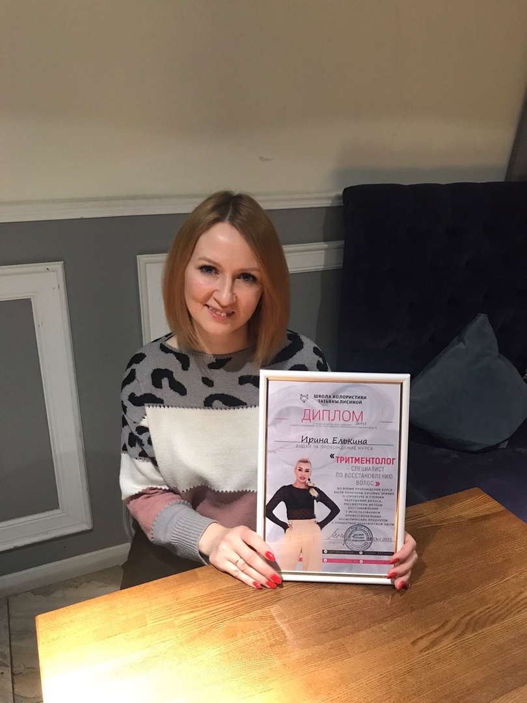
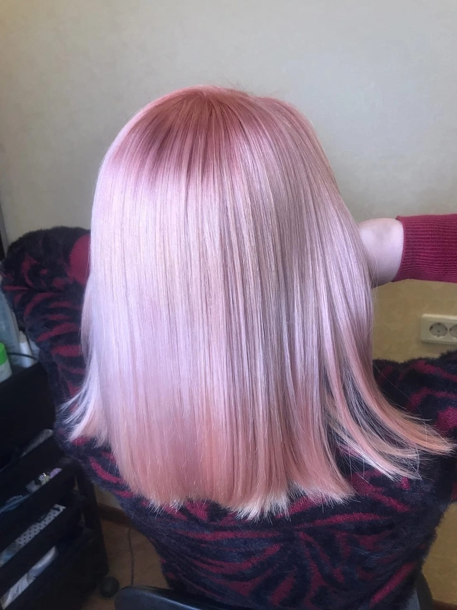

До курса доход Ирины Елькиной из небольшого городка Озерск составлял 30-50 тысяч в месяц, и большинство клиентов были на стрижки. А хотелось больше окрашиваний.
После прохождения курса и настройки страниц, стали приходить более платежеспособные клиенты на окрашивания, и доход заметно вырос. Сейчас зарабатывает 50-80 тысяч в месяц, обслуживая около 65 клиентов. За прошлый год заработала около 900 тысяч рублей.
Читай интервью Ирины в этой статье.
— Ирина, ты покупала курс в 2022 - полностью его прошла?
— Прошла 17 уроков, на 18 остановилась, настройка рекламы.
— Почему остановилась?
— Когда я прошла 17 уроков, они же не прошли даром, страница и группа стала давать результаты и клиентов стало много Я начала уставать на работе и заставить себя что-то дальше делать в интернете не смогла. Но мысли, что я доделаю не оставляли меня все это время)
— Супер) То есть клиентов стало настолько много, что тебе уже не нужно было напрягаться и тратить усилия на их поиск?)
— Так и есть)
— Расскажи, что было до курса, какой средний доход был в месяц? Сколько клиентов?
— Их и было не мало: работаю я парикмахером, тогда я ещё конечно не вела историю своих финансов, предположительно 30-50 тыс зарабатывала, но работала я на стрижках и в основном это были пенсионеры. А мечта у меня была, чтобы было больше окрашиваний (кстати, после анализа на курсе я поняла, что заниматься ими выгоднее)
После настройки страниц пошли клиенты именно категории на окрашивание и более платежеспособные, доход вырос.
В ходе 2023 года я смогла пройти ещё несколько супер курсов по повышению квалификации и сейчас хочу поднастроить поток под новые навыки, как-то так)

— Какие сложности были во время обучения на нашем курсе? Насколько сложно было учиться?
— Самое главное – найти время и не лениться, терпеливо выполнять все задания по порядку! Курс достаточно понятный и легкий в усвоении информации, затрагивает те самые боли, с которыми сталкиваемся мы – ремесленники Лично я не пожалела, что купила этот курс! Евгения классная и очень позитивная, СПАСИБО, ей, что создала такой курс!
— А как думаешь, с куратором было бы легче? Эффективней?
— Я такой человек, что люблю разбираться в большей степени сама, но в каких-то моментах, возможно, было бы не плохо, если бы был куратор, с которым можно было бы посоветоваться (один на один). Была же группа, куда можно было скидывать готовое задание и советоваться с участниками, которые были на одной волне со мной, мне этого было достаточно.
Но, возможно, если был бы куратор, то я дошла бы до конца курса.
— Какие сейчас действия делаешь для привлечения клиентов? Как часто пишешь посты? До рекламы не дошла, эт я поняла)

— Когда надо, выкладываю свои работы, обязательно с дверью, и сразу начинают писать, интересоваться моими услугами, записываются на тест-пряди, ну а дальше становятся моим новыми клиентами. Все по классике)
Так как сейчас в январе спад клиентов, я начала писать посты-рекомендации, и пишу я их с помощью нейросети, что мне очень нравится, занимает не больше 10 мин, опять же информация с курса с 2022 года)
Скорее всего, в январе активно помелькаю перед клиентами, а дальше, когда народ пойдёт, буду выкладывать по 2-3 поста в мес, чтоб, так сказать, не забывали) Ну и, конечно, для пополнения базы новыми клиентами. Жизнь не стоит на месте и бывает, что по объективным причинам кто-то выпадает, например переезжают)
— А можешь поделиться, как изменилась жизнь, когда увеличился доход? Может что-то купила себе? Съездила в путешествие? Что-то смогла сделать, чего раньше не могла позволить себе?)
— Много денег не бывает) Стала более расслаблена в плане дохода, уверенна в себе, т.к. у меня многодетная семья, то куда тратить вопроса не возникает)
Хочется, конечно, ещё больше зарабатывать, т.к растёт не только доход, но и цены в магазине.
По крайней мере, когда надо, могу вложить в себя (обучение, прокачка какого-то навыка) и сделать это не на последние деньги.
— Класс! Усе, остался только вопрос, сколько сейчас зарабатываешь? Сколько в среднем в месяц? Сколько клиентов? А вот примерно сколько за год было прошедший заработано?
— Сейчас заработок не меньше 50-80к, примерно 65 записей в месяц. Рабочий день - 5 часов! В год заработала около 900 тысяч, не так много, конечно, но буду стремиться к большему!
— Спасибо тебе за ответы) Было очень приятно получить твою обратную связь!